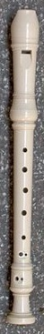
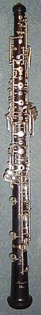

Egyéb érdekességek:
A hangszerjátékos az ajkai közé illesztett csőrszerű részbe fúj bele, így kizárólag a levegő áramlási sebességét tudja meghatározni, annak irányát, távolságát nem, ahogy ez a harántfuvola esetén viszont lehetséges.

A furulya (németül: blokflőte), az ajaksípos fúvós hangszerek közé tartozik.
A hangszert játék közben egyenesen, a levegőbefúvás irányában tartva, illetve fúvókájának csőrszerű nyúlványán keresztül fújva szólaltatják meg.
A különböző hangmagasságokat hanglyukakkal és oktávátfúvással lehet képezni, e tulajdonsága alapján a fafúvós hangszerek közé sorolható akkor is, ha manapság gyakran műanyagból készül.
A reneszánsz és a barokk zene kedvelt hangszere volt, később háttérbe szorult. Napjainkban historikus, korhű zenei előadásokon szólal meg, és az egyszerű modellek olcsósága miatt az iskolai zeneoktatásban, a műkedvelő muzsikálásban kap szerepet.
Különböző típusúak is vannak.
Pár példa:
| Hangszerek | Leírások |
|---|---|
| szopránfurulya | ma a zenetanulásban, a műkedvelő muzsikálásban legelterjedtebb típus |
| altfurulya | a barokk zenében leginkább használt típus |
| tenorfurulya | a legalsó (két) hanglyuk nyitott billentyűvel ellátva |
A hangszerjátékos az ajkai közé illesztett csőrszerű részbe fúj bele, így kizárólag a levegő áramlási sebességét tudja meghatározni, annak irányát, távolságát nem, ahogy ez a harántfuvola esetén viszont lehetséges.

Az oboa a nádnyelves hangszerek családjába tartozik, kettős nádnyelves fúvókával megszólaltatott fúvós hangszer. Kónikus, tehát kúpos furatú, fából készült, billentyűzettel ellátott teste van.
Ez nem olyan kicsinek mondható hangszer, mint a furulya, amiről itt olvashatsz egy kis ismertetőt: Hanem ez egy 70 cm-es hangszer. Mondjuk nem annyira nagy, mint egy zongora vagy hárfa.
Rémisztően hasonlít a klarinétra, de nem összetéveszteni a kettőt, ugyanis ezen hangszer nem kvintelő hangszer, vagyis alégoszlopáinak rezonanciái a teljes felhangsort tartalmazzák.
Az oboa hangszercsalád tagjai az a-hangolású oboa, az f-hangolású angolkürt és a baritonoboa. Gyakran ide sorolják még a szarruszofont, mely fémből készül, és ujjazata a szaxofonéra hasonlít, valamint a fagottot és a kontrafagottot is.
Az oboa az egyik legfontosabb hangszer a zenekarban. Könnyű hozzá hangolni, mivel hangja felhangokban gazdag. Ezért a legtöbb zenekarban az oboa adja az a alaphangot.
Ha több információt szeretnél megtudni, esetleg érdekel a története vagy a részei furulyának vagy oboának(stb.) akkor látogass el a Wikipédia oldalaira:
Furulya: Furulya Wikipédia oldala
Oboa: Oboa Wikipédia oldala